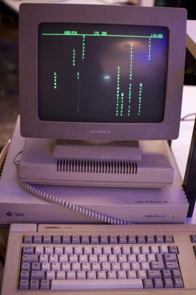
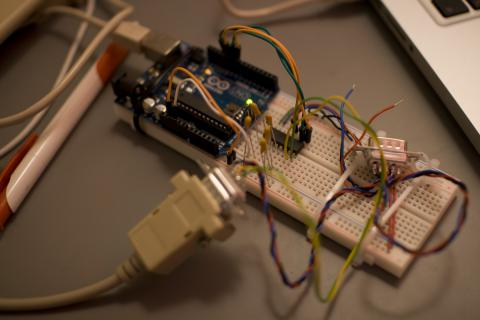

Terminals
Wenn man vier mal in der Woche 15-25 kreative und technisch begabte Leute auf einem Haufen hat, denen man dann auch noch ein wenig Geld oder Hardware in die Hand drückt und sagt, “macht mal”, kann eigentlich nur Großes daraus entstehen.
Vor lauter Basteln haben wir vielleicht etwas vergessen, auch mal Außenstehenden mitzuteilen, was wir eigentlich so alles Tolles machen. Das soll sich jetzt endgültig ändern. In der nächsten Zeit wird es an dieser Stelle immer wieder Berichte über die Projekte geben, die bei uns im Beta-Space entstanden sind oder gerade im Entstehen sind. Den Anfang macht:
Projekt: “Terminals”
Im Beta-Space standen schon seit kurz nach der Eröffnung drei serielle Terminals, die vor Jahren von unserem ersten Vorsitzenden Patrick vor der Verschrottung gerettet wurden. Nun gibt es ein Projekt zu diesen alten Schätzen aus den 70er-Jahren. Erklärtes Ziel ist es, den Geräten wieder Leben einzuhauchen.

Zunächst muss man vielleicht erklären was ein serielles Terminal ist: Bevor Personal Computer Einzug in Büros und Haushalte fanden, hatten viele Unternehmen Großrechner. Großrechner sind wie der Name schon andeutet vor allem groß und dabei laut, aber auch “leistungsstark” – zumindest für ihre Zeit. Mehrere Mitarbeiter teilten sich häufig die Rechenleistung eines dieser Rechner. Um gleichzeitiges Arbeiten zu ermöglichen, gab es Terminals, die über keine bzw. kaum eigene Rechenleistung verfügten. Die Eingaben, die ein Benutzer tätigte, wurden an den Großrechner gesendet. Dieser verarbeitete die Daten und sendete daraufhin eine Antwort an das Terminal zurück, das die Antwort auf dem Bildschirm anzeigte. Ein Terminal ist also im Wesentlichen eine Tastatur mit Monitor.
Nachdem die Terminals nun schon über 20 Jahre alt sind, war der erste Schritt herauszufinden ob sie überhaupt noch funktionieren. Dank Handbüchern war es nicht so kompliziert mit einem angeschlossenen Computer ein “Hello World” auszugeben. Nach kurzer Zeit waren auch kleinere Animationen kein Problem mehr. So kam schnell die Idee auf, einfache Animationen über alle drei Geräten laufen zu lassen. Aber wer will dafür schon die ganze Zeit seinen stromhungrigen Laptop zur Verfügung stellen. Wir brauchten also einen “Großrechner”. In unserem Fall übernimmt ein kleiner Arduino diese Rolle.

Arduinos haben serielle Schnittstellen, mit denen die Terminals allerdings nicht direkt angesteuert werden konnten, da sie die falsche Spannung liefern (0/5 V anstatt -12/+12 V). Mit einem kleinen IC lies sich aber auch dieses Problem in den Griff bekommen, sodass jetzt alle drei Terminals von einem Arduino angesteuert werden können. Mit diesem Aufbau lässt sich beispielsweise eine Laufschrift über alle drei Monitore realisieren. Wer schon mal bei einer unserer Veranstaltungen war, konnte das auch schon live bestaunen.
Aber wir wären ja keine richtigen Hacker, wenn uns eine einfache Laufschrift schon reichen würde. Die nächste Stufe war: “Warum können wir die Animationen während sie laufen nicht verändern?” Wenige Sekunden nachdem diese Frage gestellt wurde hieß es im Beta-Space dann weiter: “Warum können wir eigentlich nicht Pong auf den Dingern spielen?”
Gesagt getan: Mittlerweile sind an den Arduino zwei Playstation Controller angeschlossen, Pong und Snake wurden programmiert, und wir freuen uns über entspannte Spieleabende in originalgetreuer grün-schwarzer- und oder bernsteinfarbender Monochromoptik.
Wer auch mal spielen möchte, der kommt einfach mal im Beta-Space vorbei und fordert einen von uns heraus.